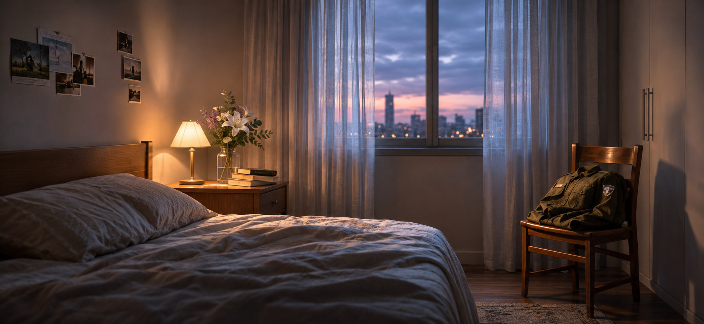
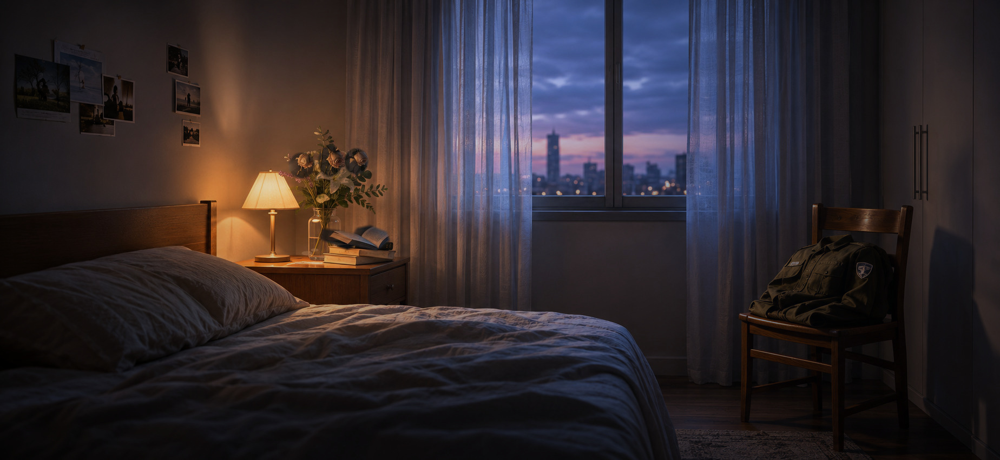
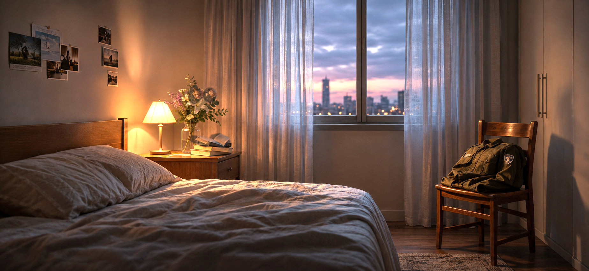

The Memory
Remains
The past is not erased. What changes is how much of the present it occupies.



The original work

Babylonian Vision (2020) — Nora Al-Badri. Original artwork image © Nora Al-Badri, via EPFL Pavilions.
View original artwork ↗What does memory keep?
In Babylonian Vision, Nora Al-Badri uses artificial intelligence to create artifacts that appear historical, although they never existed. The work questions the authority of museum archives and the way systems of ownership and representation shape our image of the past.
My response shifts the focus from collective cultural memory to personal traumatic memory, particularly the experience of veterans living with post-traumatic stress. Rather than imagining the deletion of a painful event, I ask whether its emotional presence can change while the memory remains.
The interactive work presents a quiet bedroom, a space associated with rest and safety. As the viewer interacts, books shift, flowers wilt, and familiar objects seem unsettled. Gradually, the room regains balance. Some flowers bloom again while others remain dry; the uniform on the chair does not move.
Inspired by research on memory reconsolidation, the work uses the latent space as a metaphor, not a medical simulation: the past cannot be undone, but its relationship to the present may change.
One room, three readings
Difference from the original
Where Babylonian Vision generates speculative historical artifacts from museum archives, this work explores the emotional weight of a personal memory. It does not create a fictional past; it asks how an existing past might occupy a different place in the present.